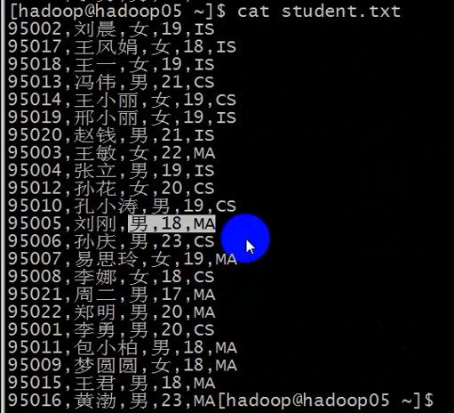

提前公布学生表里的内容供下文中使用。 字段名分别为id, name, sex, age, department

1、DDL ： 数据定义语言
(1)库 操作
创建
create database if not exists myhive;
create database myspark if not exists location "/db/myspark";
创建库或创建表时都可以指定该数据库或表储存在hdfs中的路径
查询
查询所有的数据库： show databases;
查询正在使用的库： select current_database();
查询库的详细建库语句： desc database myhive;
查询表中有那些字段
desc myhive.student;
查询表的详细建表语句
show create table hive.stu_ptn;
查询表的详细信息
desc extended stu_ptn; (未格式化)
desc formatted stu_ptn; (会有表的详细的已格式化的信息,常用)
select * from myhive.student; (注意这句话可以在当前操作的数据库不是myhive时查询到myhive库中的student表的信息)
修改 （没有必要）
删除 （用的不多）
drop database myspark; (等价于drop database myspark restrict; 如果库里有表将不能删除)
drop database myspark cascade; (级联删除,如果库里有表将一起删除)
(2)表 操作
创建表
create table student(id int);
具体语法如下:
CREATE [EXTERNAL] TABLE [IF NOT EXISTS] table_name
[(col_name data_type [COMMENT col_comment], ...)] (列定义)
[COMMENT table_comment]
[PARTITIONED BY (col_name data_type [COMMENT col_comment], ...)] (定义分区规则)
[CLUSTERED BY (col_name, col_name, ...)[SORTED BY (col_name [ASC|DESC], ...)] INTO num_buckets BUCKETS] (定义分桶规则)
[ROW FORMAT row_format] (指定列分隔符和行分隔符等)
[STORED AS file_format]
[LOCATION hdfs_path] (指定该表存储在hdfs中的路径)
分区的字段名设定时一定不能和表的字段名相同,也就是说创建分区表时,要专门拿出一个(或多个)表中的记录的字段来作为分区字段, 这个字段就不能作为表结构的字段了,而是作为一个独立的分区字段了(虽然在具体的表中记录里, 分区字段就和一个普通的字段一样)。
而分桶的字段则一定要是表结构的字段才行。
创建临时表或者创建表的同时插入数据(可以在创建表时先不指定列名了): Create Table As Select (CTAS)

--------------------------------------------------------------------------------------------------
分区建表的形式有两种:(单分区表是指只有一个分区字段,多分区表是指有多个分区字段)
单分区:
partitioned by(dpt string);
记录的样式如下: 最后一个字段是虚拟链,并不是真实字段,而是从元数据库查出来的字段,但在使用该字段时可直接当成普通字段使用
id name sex dpt
001 huangbo 24 IS
储存目录就会像这样:
user/hive/warehouse/myhive.db/student_ptn/dpt=IS/student_IS.txt
多分区:(这里是二分区)
partittioned by (dpt string, city string)
记录的样式如下:最后两个字段是虚拟链,并不是真实字段,而是从元数据库查出来的字段,但在使用该字段时可直接当成普通字段使用
id name sex dpt city
001 huangbo 24 IS beijing
储存目录就会像这样:
user/hive/warehouse/myhive.db/student_ptn/dpt=IS/city=beijing/student_IS.txt
创建分区表：
错误的写法:
create external table stu_ptn (id int, name string) partitioned by (city string)
row format delimited fields terminated by "," location "/hive/ext/"
(这种写法是错误的, 因为分区表要指定目录的话最后一级目录一定是分区名,如/hive/ext/city=AA ,
分区表的目录没有具体对应某个分区名是不行的,会读不出数据 )
正确的写法:
单分区:
create table stu_ptn (id int, name string) partitioned by (city string) row format delimited fields terminated by ","
有两种给分区表添加分区的方式:
1)修改表:

2)导入原先就存在的文件到该多分区表并同时创建(指定)分区:(如果不指定分区数据是导入不进去的)

那么在查询时,分区字段就可以当成普通字段来使用了

多分区:
create table stu_ptn_2 (id int, name string) partitioned by (city string, dt string)
row format delimited fields terminated by ",";
导入原先就存在的文件到该多分区表并指定相应的分区: (这里多分区表一定要多个分区同时指定才能导入成功)

-----------------------------------------------------------------------------------------------------------
创建分桶表:
create table stu_bck(id int, name string)
clustered by (name) sorted by (id desc) into 4 buckets
row format delimited fields terminated by ",";
(into 4 buckets 是指定分成多少个桶)
要点：
1、直接用load 方式往分桶表导入数据是不能成功的。
2、分桶表的数据，不会直接在导入的时候进行分桶操作, 所以不能用load导入数据, 而是必须要通过分桶查询得到的结果进行插入。
正确的导入数据
insert into table stu_bck select ... from... (where...) cluster by name;
--------------------------------------------------------------------------------------------------------------
like的使用,只复制表的结构,不复制表里的记录:(如 create table stu_copy like student;)
即使是分区表也不会复制具体分区(如city=BB),因为分区在表里其实也就是一个字段, 所以分区字段都是当做普通字段直接复制的

查询某个库中所有的表
show tables in myhive;
查询表中有那些字段
desc myhive.student;
查询表的详细建表语句
show create table hive.stu_ptn;
查询表的详细信息
desc extended stu_ptn; (未格式化)
desc formatted stu_ptn; (会有表的详细的已格式化的信息,常用)
清空表
truncate table student;
truncate table student_ptn; 表示把整个分区表的所有数据都清空，但是所有存在的分区保留
truncate table stu_ptn partition(city='AA'); 清空某个指定的分区里的数据,该分区也还是保留
删除表
drop table stu_ptn;
修改表：
修改表名
alter table stt_bck rename to stu_bck;
修改表字段的定义
添加字段（在原来的字段的后面进行添加,添加的字段一定是在最后）(注意和mysql区分, mysql添加字段没有关键字"columns")
alter table student add columns (city string, email string, aa int);
修改字段（修改 字段名称、字段类型，修改字段的顺序）
(注意,在2.3版本中,能将int改为string类型,但不能将string改为int类型,在1.x版本中是可以互相转换的)
alter table student change age age_new string after sex; (after表示放在某个字段后面)
alter table student department dpt string first; (first表示放在所有字段之前,注意没有before关键字)
删除字段（不支持）
替换字段（替换时必须将所有字段全部替换,即使不替换的也要写出来）
alter table student replace columns (id int, name string, sex string, age string, department string);
修改表的数据存储路径(注意修改表的路径时原先路径的数据并不会迁移到新路径中去,而且原先的路径也不会删除, 原来的表中的数据还是在原路径中。所以内部表最好不要修改存储路径,不然以后删除该修改过路径的表后再创建了一张同名表会导致新表里建表成功后里面直接就有之前老表的数据)
alter table student set location "/aa/bb";
修改分区的定义
添加分区
添加一个分区:
alter table student_ptn add partition(city='beijing');
同时添加多个分区:
alter table student_ptn add partition(city='beijing3') partition(city='beijing1') partition(city='beijing2');
删除分区
alter table student_ptn drop partition(city='beijing3');
修改某个分区的数据存储目录
alter table student_ptn partition(city="beijing") set location "/c/d"
修改表的其他属性
不管是创建库还是创建表，都可以指定路径。创建分区的时候，也可以指定额外的路径
2、DML : 数据操纵语言
2.1 导入数据
load data local inpath "/home/hadoop/student.txt" into table student; (从linux本地系统中导入,相当于复制一份文件到hdfs,也就是说会有数据的上传)
load data inpath "/stu/input/student.txt" into table student; (从hdfs中导入,注意这里相当于移动文件,而不是复制,原先"/stu/input/student.txt"目录下的文件会消失)
导入数据到分区表的某个分区:

hive支持绝大部分的查询, 但不支持纪录级别的 删改
delete from student where id = 95223; (不支持记录级别的删除,所以这条语句会报错)
记录级别的"增":(支持)
插入一条记录到普通表
insert into table student values (95223,"hhhh","男",33,"MA"),(95224,"hhhh","男",33,"MA");
(这是记录级别的插入,但是不推荐使用,因为执行一次这条语句就启动一个MapReduce程序)
将其他表的数据分区插入到分区表:
// 将查询出来的结果当做要导入的数据 导入到 一张表中去
insert into table xxx partition(col_name="xx") select ..... ;
举例,分三次插入到分区表,需要扫描student全表三次:
insert into table student_ptn partition(city="MA") select * from student where department = 'MA';
insert into table student_ptn partition(city="CS") select * from student where department = 'CS';
insert into table student_ptn partition(city="IS") select * from student where department = 'IS';
改进方法: 多重插入：(只需扫描一次全表)
from ....
insert ... select ...
insert ... select ...
insert ... select ...
..... ;
举例:(只需扫描一次整个student表)
from student
insert into table student_ptn partition(city="MA") select * where department = 'MA'
insert into table student_ptn partition(city="IS") select * where department = 'IS'
insert into table student_ptn partition(city="CS") select * where department = 'CS';
// 创建普通student表：
create table student(id int, name string, sex string, age int, department string)
row format delimited fields terminated by ",";
load data local inpath "/home/hadoop/student.txt" into table student;
select * from student;
// 创建分区表student_ptn;
create table student_ptn(id int, name string, sex string, age int, department string)
partitioned by (city string)
row format delimited fields terminated by ",";
load data local inpath "/home/hadoop/student.txt" into table student partition(city="beijing");
// 创建一张多分区表的分区表：
create table student_city_dpt(id int, name string, sex string, age int)
partitioned by (city string, department string)
row format delimited fields terminated by ",";
load data local inpath "/home/hadoop/student.txt" into table student partition(city="beijing");
(2)动态分区插入 (指的是将新数据插入到分区表)
分区插入
静态分区: 直接插入数据, 导入数据时必须指定分区。
动态分区：扫描全表,对于用于分区的字段,每次一遇到一个不同的分区字段值，就会自动的创建一个该字段值对应的分区, 也就是说不用像静态分区一样敲代码自己指定分区名, 并且如果新数据里分区字段值不相同, 也不至于像静态分区方式一样全放到一个分区里去了。
想使用动态分区就必须先执行以下两条命令:
set hive.exec.dynamic.partition=true; // 当前这个命令的意思就是把动态分区的开关打开，
但是事实上，这个开关默认是 开启的。
set hive.exec.dynamic.partition.mode=nonstrict; // 表示设置动态分区的模式为nostrict（默认情况下是strict的)
// 静态分区插入 (方式一, 用load直接导入, 这样的话要人为的确保里面的分区字段都是同一个分区的数据,不然全部数据都放在一个分区, 但可能有的记录却不应该是放在该分区的)
load data local inpath "/xx" into table student_ptn partition(department="CS")';
// 静态分区插入(方式二,用inset into插入, 后面加上where语句判断, 以筛选出属于该分区的记录)
insert into table student_city_dpt partition(city="beijing", department="MA") select id, name, sex, age from student where department = 'MA';
//静态分区插入(方式三,用多重插入: from ... insert ...insert ,只需扫描一次整个student表, 如果知道新数据所有的分区字段的值, 则可以一次性将所有记录插入到分区表的各个对应分区中)
from student
insert into table student_ptn partition(city="MA") select * where department = 'MA'
insert into table student_ptn partition(city="IS") select * where department = 'IS'
insert into table student_ptn partition(city="CS") select * where department = 'CS';
// 动态分区插入(strict模式下)
insert into table student_city_dpt partition(city="tianjin", department) select id, name, sex, age, department from student;
// 在默认的严格模式下， 做动态分区插入时， 第一个分区字段必须是静态分区(静态分区也就是指定具体分区, 即上面这句代码中, city为静态分区,而department为动态分区), 并且查询语句当中的 select关键字后面跟的最后一个字段值 必须是 动态分区的字段(如上面语句中的department),如果是其他字段放在最后,将会导致分区结果错误(能正常执行语句), 会按照放在最后的那个字段来进行分组,这时候分的组就不是自己预想的组了
比如下面的句子就会导致分区结果错误:
insert into table student_city_dpt partition(city="tianjin", department) select id, name,department, sex, age from student;
还有,要记住,不能让子分区为静态分区,父分区为动态分区,下面这种写法会报错:
insert into table student_city_dpt partition(city, department="AAAAA") select id, name, sex, age, age as city from student;
// 动态分区插入(nostrict模式下)
此时如果有两个分区字段, 两个字段也都要显示给出, 但不用指定具体分区。但是这两个分区字段都必须要放在select关键字后面跟的查询字段的最后,两个字段的先后顺序也要和分区本身的先后顺序一致
insert into table student_city_dpt partition(city, department) select id, name, sex, age, sex as city, department from student;
如果第一个分区字段有两种不同的字段值,第二个分区字段有三种不同的字段内置,则分区最多会有六种组合,举例如下:
sex=男/department=MA
sex=男/department=CS
sex=男/department=IS
sex=女/department=MA
sex=女/department=IS
sex=女/department=CS
-----------------------------------------------------------------------------------------------
其中注意以下两条语句的区别:
set hive.exec.dynamic.partition; 表示查询这个key对应的value值
set hive.exec.dynamic.partition=true; 表示给这个key设置一个值为true
insert into table .... select ..... 将查询到的结果往已经存在的表插入
create table ... as select ... 将查询到的结果直接作为一张新表
2.2 查询
select 查询的四个 by
order by 全局排序。针对所有数据。也就是说所有数据按照一定规则排序。全局序必然只有一个reduceTask。
sort by 局部排序， 每个reduceTask的结果有序(如果只有一个reduceTask,那么全局有序和局部有序是一样的。默认情况下就是一个reduceTask)
distribute by 分桶。用来做分桶查询的。只是按分桶字段查询,不按分桶字段排序。 按照指定的字段对数据进行划分输出到不同的reduceTask中。
cluster by 既分桶，又局部排序。既做分桶查询也做局部排序。先按分桶字段查询,再保证查询出来的数据局部有序。
如果设置的reduceTask的个数大于1， 但是业务需求是 order by 。则会忽略reduceTask的个数设置。MR最终还是用一个reduceTask跑的, 也就是全局有序的
如果设置的reduceTask的个数等于1， 但是业务需求是 sort by。 则结果是局部有序， 同时也是全局有序。因为只有一个结果文件
//下面的两者等价。
cluster by age = distribute by age sort by age;
//例句如下
insert overwrite local directory "/home/hadoop/dst_age" select * from student distribute by age sort by age desc;
等价于
insert overwrite local directory "/home/hadoop/cluster_age" select * from student cluster by age desc;
如果直接指定cluster by进行分桶和局部排序， 那么排序的规则是默认的字典顺序(按照字母或数字升序)
//cluster by 和 sort 不能连用
cluster by age sort by id desc (错误写法)
distribute by age sort by age asc, id desc; (正确等价形式)
//例句如下:
select * from student cluster by age sort by id desc ; 错误
select * from student distribute by age sort by age asc, id desc; 正确
也就是说distribute by 经常和sort by连用, 用来按某个字段分桶查询, 按另一个字段排序
//同时也要注意, order by和其他三个by都不能连用, 因为它是全局排序。
----------------------------------------------------------------------------------------------------------------------
hive中Sort By，Order By，Cluster By，Distribute By，Group By的区别
order by：
hive中的order by 和传统sql中的order by 一样，对数据做全局排序，加上排序，会新启动一个job进行排序，会把所有数据放到同一个reduce中进行处理，不管数据多少，不管文件多少，都启用一个reduce进行处理。如果指定了hive.mapred.mode=strict（默认值是nonstrict）,这时就必须指定limit来限制输出条数，原因是：所有的数据都会在同一个reducer端进行，数据量大的情况下可能不能出结果，那么在这样的严格模式下，必须指定输出的条数。
sort by：
sort by 是局部排序，会在每个reduce端做排序，每个reduce端是排序的，也就是每个reduce出来的数据是有序的，但是全部不一定有序，除非一个reduce，一般情况下可以先进行局部排序完成后，再进行全局排序，会提高不少效率。
distribute by：
distribute by 是控制map端在reduce上是如何区分的(其实也就是把distribute by 后面跟的字段指定为key 来对记录进行分区(如按照HashPartition分区))，distribute by会把相同的Key发到同一个reduce中。一般情况下可以结合sort by 使用，distribute by必须要写在sort by之前。先进行分组reduce，再进行排序（相当于mapreduce中的分区函数）。
比如：select mid, money, name from store distribute by mid sort by mid asc, money asc；所有mid相同的数据会被送到同一个reducer去处理，这是因为指定了distribute by mid
PS：
Order by 能够预期产生完全排序的结果，但是它是通过只用一个reduce来做到这点的。所以对于大规模的数据集它的效率非常低。在很多情况下，并不需要全局排序，此时可以换成Hive的非标准扩展sort by。Sort by为每个reducer产生一个排序文件。在有些情况下，你需要控制某个特定行应该到哪个reducer，通常是为了进行后续的聚集操作。Hive的distribute by 子句可以做这件事
cluster by（只能是使用默认的升序排序，不能使用ACS和DESC）：
这个其实就是distribute by 和sort by 结合使用的结果（前提是同一个字段）。
例如：select id,money,name from t cluster by id;
等价于：select id,money,name from t distribute by id sort by id
distribute by和group by的区别：
都是按key值划分数据 都使用reduce操作 **唯一不同的是，distribute by只是单纯的分散数据，distribute by col – 按照col列把数据分散到不同的reduce。而group by把相同key的数据聚集到一起，后续必须是聚合操作。
order by和sort by的区别：
order by是全局排序 sort by只是确保每个reduce上面输出的数据有序。如果只有一个reduce时，和order by作用一样。
------------------------------------------------------------------------------------------------------------------------
//下面设置的值只会在当前会话有效
// 用来设置每一个reduceTask最多用来处理多少量的数据 默认是256M
In order to change the average load for a reducer (in bytes):
set hive.exec.reducers.bytes.per.reducer=<number>
// 用来设置整个任务最多使用的reduceTask的个数， 默认值 1009
In order to limit the maximum number of reducers:
set hive.exec.reducers.max=<number>
// 用来设置一个常数数量的reducer的个数 ， 默认值是 -1表示没有设置 其实就相当于1
In order to set a constant number of reducers:
set mapreduce.job.reduces=<number>
// 其实分桶查询时桶的个数，就会是分桶查询转化为mapreduce程序后reduceTask的个数。多少个桶就有多少个结果文件,而且分桶的规则和MapReduce的HashPartitioner的规则一模一样, 其实就是取余,有n个桶,就用分桶字段%n来取余,相同余数的放在同一个桶里,如下面的语句就是通过age%n来分桶:
insert overwrite local directory "/home/hadoop/dst_age" select * from student distribute by age;
创建分桶表时: 设置的桶的个数就是表的分桶的个数(或者说表的文件的个数,前提是该表不是分区表,如果是分区表则是分区数x桶数 = 结果文件个数)
分桶查询的时候： 默认分桶的个数 是 分桶查询转化为mapreduce程序后reduceTask 的个数
区别对待group by 和order by
group by的执行 是 在 select 之前
order by的执行 是 select 之后
所以order by后面接的可以是select语句中定义的别名，而group by则不可以接select语句中定义的别名, (但是mysql中虽然group by执行在select之前, 却也是可以接select中定义的别名)
还有，order by后面跟的字段还必须是select后面跟的字段中的一个或多个，也就是说order by后面的字段必须是查询出来的字段 ，只有要查询出来的字段才会进行排序（当然这是说在hive中，在mysql中就没有这种限制，毕竟hive是为大数据考虑的，查了的才排序，不查的不排序）
总结一个规律（指的是在hive中）：
如果一个sql语句是一个group by的操作， 那么select 后面的查询字段只能出现以下两种情况：
1、要么是group by后面的字段
2、要么是聚集函数（如sum count,max min avg）
只能以上两种情况能作为字段跟在select后面，若跟了其他字段，则会报错
但在mysql中，有group by 子句时， 若是select字段后面跟了以上两种情况之外的字段，也不会报错，能正确运行出结果。一般来说（但也有许多情况不是这样）以上两种情况作为字段跟在select后面group by 子句才有意义，如果不是上面两种情况下使用group by，那么很多时候不用group by 也能得到想要的结果；但是较为复杂的sql语句比如多表连接时，不用group by或者select字段后面不跟其他字段，就不一定能得到想要的结果。逼不得已要在使用了group by后，select后面要跟其他字段，那么在hive中就只能分成多条sql语句来写了，而mysql则没有这种苦恼。
面试可能会问的问题
前面说过，HQL 语句会被转换成 MapReduce 程序执行，但是部分HQL 语
句并不会转换成 MapReduce，那么什么情况下可以避免转换呢？
1 、简单读取表中文件数据时不会。或者带普通过滤条件的select * 都不会
select * from student;
select * from student where age > 18;
select * from student where department = 'MA';
而 select count(*) from student; 这样的则会转换为MapReduce程序执行;
2 、如果是分区表,则where 过滤条件中只是分区字段时不会转换成 MapReduce
select * from student_ptn where city = 'AA';
3 、当设置了 set hive.exec.mode.local.auto=true; // (默认情况下是false)则hive 会尝试使用本地模式执行
有一定的限制才能转换(当然这些限制条件也可以自己通过set来修改):
(1)查询的表的总大小不能超过100M
(2)表的数据文件也不能超过4个
否则，其他情况都会被转换成 MapReduce 程序执行
hive 中 的 join的查询
支持等值连接， 不支持非等值连接
select a.*, b.* from a join b on a.id = b.id; (支持)
select a.*, b.* from a join b on a.id > b.id; (不支持)
支持连接条件的and操作， 不支持or操作
select a.*, b.* from a join b on a.id = b.id and a.name = b.name; (支持)
select a.*, b.* from a join b on a.id = b.id or a.name = b.name; (不支持)
hive的join 的分类：
1、内连接 inner join == join
2、外连接 outer join
左外链接 left outer join
右外链接 right outer join
全外链接 fu ll outer join
3、半连接 semi join (注意: hive中只有 left semi join(左半连接),没有 right semi join(右半连接) )
// 在下面的这个SQL场景中，id表中的id字段的值只有 18, 19, 20这三个
// 下面的in语句和semi join语句是等价
select student.* from student left semi join id on student.age = id.id;
select * from student where age in (18, 19, 20);
// 注意: select关键字后面跟的查询字段，只能是student表中的,不能是b表的
select a.* from a left semi join b on a.id = b.id;
//在hive中 semi join 的效率要远远高于in和exist
hive可以支持多表连接：
1、select a.*, b.* from a join b on a.id = b.id; 最终翻译成一个MapReduce程序
2、select a.*, b.* ,c.* from a join b on a.id = b.id join c on a.name = c.name;
翻译成两个mapreduce程序
3、select a.*, b.*, c.* from a join b on a.id = b.id join c on a.id = c.id;
翻译成一个mapreduce程序
写连接语句的时候最好把小表写在前面,大表写在最后。因为如果做多表连接，那么hive翻译出
来的 mapreduce程序需要缓存做连接时的左边的表, 如果缓存大表的话占的内存会比较多
——————————————————————手写与上传资料分割线———————————————————————